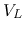
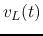
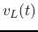
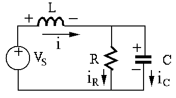
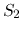
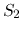
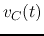
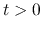
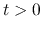
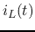

Next: About this document ...
Midterm Exam (summer 2014)
- (33 points)
Find the current through and volage  across the load resistor
 in the circuit, where
in the circuit, where  ,
,  , ,
. If it is desired for to dissipate maximum
amount of energy, what value should take?
, ,
. If it is desired for to dissipate maximum
amount of energy, what value should take?

- (33 points)
In the AC circuit shown below,
 ,
,  ,
,  , and
, and
 with angular frequency
.
Find
with angular frequency
.
Find
- currents ,
 , and
, and 
- voltages
 and 
and 

- (34 points)
In the circuit shown below,
 ,
,  ,
,
,
,
 , . The switches
, . The switches  and  are switched from
right to left at
and  are switched from
right to left at  . The system has reached steady state by .
. The system has reached steady state by .

- Apply KCL to the top node to set up a first order DE in terms
of voltage  across
 . Find for  by the short-cut
method in terms of
. Find for  by the short-cut
method in terms of  ,
,  , and
, and  .
.
- Apply KCL to the bottom node to set up a first order DE in terms
of current  through
 . Find for by the short-cut
method in terms of
. Find for by the short-cut
method in terms of  , , and .
, , and .
- Find
for .
Next: About this document ...
Ruye Wang
2015-07-04